| Symbol |
Description |
AD390JD | Description: Quad 12bit DAC, 4LSB Gain Error, DH-28
Keys: 4ch DAC 12bit
Datasheet: https://www.analog.com/static/imported-files/data_sheets/AD390MIL.pdf |
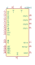
AD390KD | Description: Quad 12bit DAC, 2LSB Gain Error, DH-28
Keys: 4ch DAC 12bit
Datasheet: https://www.analog.com/static/imported-files/data_sheets/AD390MIL.pdf |
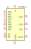
AD558JN | Description: Single 8-bit DAC, Internal Reference, Output Amp, Single Supply, DIP-16
Keys: 8bit DAC Reference Single Supply
Datasheet: https://www.analog.com/static/imported-files/data_sheets/AD558.pdf |
AD558JP | Description: Single 8-bit DAC, Internal Reference, Output Amp, Single Supply, PLCC-20
Keys: 8bit DAC Reference Single Supply
Datasheet: https://www.analog.com/static/imported-files/data_sheets/AD558.pdf |
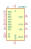
AD558KN | Description: Single 8-bit DAC, Internal Reference, Output Amp, Single Supply, DIP-16
Keys: 8bit DAC Reference Single Supply
Datasheet: https://www.analog.com/static/imported-files/data_sheets/AD558.pdf |
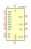
AD558KP | Description: Single 8-bit DAC, Internal Reference, Output Amp, Single Supply, PLCC-20
Keys: 8bit DAC Reference Single Supply
Datasheet: https://www.analog.com/static/imported-files/data_sheets/AD558.pdf |
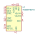
AD5687BCPZ | Description: Dual, 12-Bit nanoDAC+ with SPI Interface, LFCSP-16
Keys: dac 2nch 12bit spi
Datasheet: https://www.analog.com/media/en/technical-documentation/data-sheets/AD5689_5687.pdf |
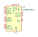
AD5687BRUZ | Description: Dual, 12-Bit nanoDAC+ with SPI Interface, TSSOP-16
Keys: dac 2nch 12bit spi
Datasheet: https://www.analog.com/media/en/technical-documentation/data-sheets/AD5689_5687.pdf |
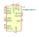
AD5687RBCPZ | Description: Dual, 12-Bit nanoDAC+ with 2 ppm/°C Reference, SPI Interface, LFCSP-16
Keys: dac 2nch 12bit spi
Datasheet: https://www.analog.com/media/en/technical-documentation/data-sheets/AD5689R_5687R.pdf |
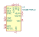
AD5687RBRUZ | Description: Dual, 12-Bit nanoDAC+ with 2 ppm/°C Reference, SPI Interface, TSSOP-16
Keys: dac 2nch 12bit spi
Datasheet: https://www.analog.com/media/en/technical-documentation/data-sheets/AD5689R_5687R.pdf |
AD5689BCPZ | Description: Dual, 16-Bit nanoDAC+ with SPI Interface, LFCSP-16
Keys: dac 2nch 16bit spi
Datasheet: https://www.analog.com/media/en/technical-documentation/data-sheets/AD5689_5687.pdf |
AD5689BRUZ | Description: Dual, 16-Bit nanoDAC+ with SPI Interface, TSSOP-16
Keys: dac 2nch 16bit spi
Datasheet: https://www.analog.com/media/en/technical-documentation/data-sheets/AD5689_5687.pdf |
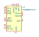
AD5689RxCPZ | Description: Dual, 16-Bit nanoDAC+ with 2 ppm/°C Reference, SPI Interface, LFCSP-16
Keys: dac 2nch 16bit spi
Datasheet: https://www.analog.com/media/en/technical-documentation/data-sheets/AD5689R_5687R.pdf |
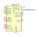
AD5689RxRUZ | Description: Dual, 16-Bit nanoDAC+ with 2 ppm/°C Reference, SPI Interface, TSSOP-16
Keys: dac 2nch 16bit spi
Datasheet: https://www.analog.com/media/en/technical-documentation/data-sheets/AD5689R_5687R.pdf |
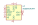
AD5691RxRM | Description: Tiny, 12-Bit, I2C, nanoDAC+, 2 ppm/C Reference, MSOP-10
Keys: serial DAC i2c digital analog converter
Datasheet: https://www.analog.com/media/en/technical-documentation/data-sheets/AD5693R_5692R_5691R_5693.pdf |
AD5693RxRM | Description: Tiny, 16-Bit, I2C, nanoDAC+, 2 ppm/°C Reference, MSOP-10
Keys: serial DAC i2c digital analog converter
Datasheet: https://www.analog.com/media/en/technical-documentation/data-sheets/AD5693R_5692R_5691R_5693.pdf |
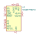
AD5697RBCPZ | Description: Dual, 12-Bit nanoDAC+ with 2 ppm/C Reference, I2C Interface, LFCSP-16
Keys: dac 2nch 12bit i2c
Datasheet: https://www.analog.com/media/en/technical-documentation/data-sheets/AD5697R.pdf |
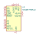
AD5697RBRUZ | Description: Dual, 12-Bit nanoDAC+ with 2 ppm/C Reference, I2C Interface, TSSOP-16
Keys: dac 2nch 12bit i2c
Datasheet: https://www.analog.com/media/en/technical-documentation/data-sheets/AD5697R.pdf |
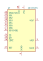
AD7224KN | Description: 8bit DAC, Dual or Single Supply, DIP-18
Keys: 8bit DAC Dual Single Supply 1ch
Datasheet: https://www.analog.com/static/imported-files/data_sheets/AD7224.pdf |
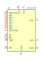
AD7224KP | Description: 8bit DAC, Dual or Single Supply, PLCC-20
Keys: 8bit DAC Dual Single Supply
Datasheet: https://www.analog.com/static/imported-files/data_sheets/AD7224.pdf |
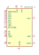
AD7224KR-1 | Description: 8bit DAC, Dual or Single Supply, SOIC-20
Keys: 8bit DAC Dual Single Supply
Datasheet: https://www.analog.com/static/imported-files/data_sheets/AD7224.pdf |
AD7224KR-18 | Description: 8bit DAC, Dual or Single Supply, SOIC-18
Keys: 8bit DAC Dual Single Supply
Datasheet: https://www.analog.com/static/imported-files/data_sheets/AD7224.pdf |
AD7224LN | Description: 8bit DAC, Dual or Single Supply, DIP-18
Keys: 8bit DAC Dual Single Supply
Datasheet: https://www.analog.com/static/imported-files/data_sheets/AD7224.pdf |
AD7224LP | Description: 8bit DAC, Dual or Single Supply, PLCC-20
Keys: 8bit DAC Dual Single Supply
Datasheet: https://www.analog.com/static/imported-files/data_sheets/AD7224.pdf |
AD7224LR-1 | Description: 8bit DAC, Dual or Single Supply, SOIC-20
Keys: 8bit DAC Dual Single Supply
Datasheet: https://www.analog.com/static/imported-files/data_sheets/AD7224.pdf |
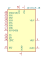
AD7224LR-18 | Description: 8bit DAC, Dual or Single Supply, SOIC-18
Keys: 8bit DAC Dual Single Supply
Datasheet: https://www.analog.com/static/imported-files/data_sheets/AD7224.pdf |
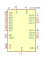
AD7225BRS | Description: Quad 8bit DAC, Separate Reference Voltage, SSOP-24
Keys: 8bit DAC 4CH
Datasheet: https://www.analog.com/static/imported-files/data_sheets/AD7225.pdf |
AD7225CRS | Description: Quad 8bit DAC, Separate Reference Voltage, SSOP-24
Keys: 8bit DAC 4CH
Datasheet: https://www.analog.com/static/imported-files/data_sheets/AD7225.pdf |
AD7225KN | Description: Quad 8bit DAC, Separate Reference Voltage, PDIP-24
Keys: 8bit DAC 4CH
Datasheet: https://www.analog.com/static/imported-files/data_sheets/AD7225.pdf |
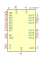
AD7225KP | Description: Quad 8bit DAC, Separate Reference Voltage, PLCC-28
Keys: 8bit DAC 4CH
Datasheet: https://www.analog.com/static/imported-files/data_sheets/AD7225.pdf |
AD7225KR | Description: Quad 8bit DAC, Separate Reference Voltage, SOIC-24
Keys: 8bit DAC 4CH
Datasheet: https://www.analog.com/static/imported-files/data_sheets/AD7225.pdf |
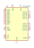
AD7225LN | Description: Quad 8bit DAC, Separate Reference Voltage, PDIP-24
Keys: 8bit DAC 4CH
Datasheet: https://www.analog.com/static/imported-files/data_sheets/AD7225.pdf |
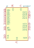
AD7225LP | Description: Quad 8bit DAC, Separate Reference Voltage, PLCC-28
Keys: 8bit DAC 4CH
Datasheet: https://www.analog.com/static/imported-files/data_sheets/AD7225.pdf |
AD7225LR | Description: Quad 8bit DAC, Separate Reference Voltage, SO-24
Keys: 8bit DAC 4CH
Datasheet: https://www.analog.com/static/imported-files/data_sheets/AD7225.pdf |
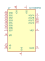
AD7226BRSZ | Description: Quad 8bit DAC, 4 Channel, Single Reference Voltage, SSOP-20
Keys: 4CH DAC 8bit
Datasheet: https://www.analog.com/static/imported-files/data_sheets/AD7226.pdf |
AD7226KN | Description: Quad 8bit DAC, 4 Channel, Single Reference Voltage, DIP-20
Keys: 4CH DAC 8bit
Datasheet: https://www.analog.com/static/imported-files/data_sheets/AD7226.pdf |
AD7226KP | Description: Quad 8bit DAC, 4 Channel, Single Reference Voltage, PLCC-20
Keys: 4CH DAC 8bit
Datasheet: https://www.analog.com/static/imported-files/data_sheets/AD7226.pdf |
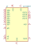
AD7226KR | Description: Quad 8bit DAC, 4 Channel, Single Reference Voltage, SOIC-20
Keys: 4CH DAC 8bit
Datasheet: https://www.analog.com/static/imported-files/data_sheets/AD7226.pdf |
AD7228ABN | Description: 8bit DAC 8 Channel, Single Reference, DIP-24
Keys: 8bit DAC 8CH
Datasheet: https://www.analog.com/static/imported-files/data_sheets/AD7228.pdf |
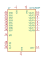
AD7228ABP | Description: 8bit DAC 8 Channel, Single Reference, PLCC-28
Keys: 8bit DAC 8CH
Datasheet: https://www.analog.com/static/imported-files/data_sheets/AD7228.pdf |
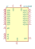
AD7228ABR | Description: 8bit DAC 8 Channel, Single Reference, SOIC-24
Keys: 8bit DAC 8CH
Datasheet: https://www.analog.com/static/imported-files/data_sheets/AD7228.pdf |
AD7228ACN | Description: 8bit DAC 8 Channel, Single Reference, DIP-24
Keys: 8bit DAC 8CH
Datasheet: https://www.analog.com/static/imported-files/data_sheets/AD7228.pdf |
AD7228ACP | Description: 8bit DAC 8 Channel, Single Reference, PLCC-28
Keys: 8bit DAC 8CH
Datasheet: https://www.analog.com/static/imported-files/data_sheets/AD7228.pdf |
AD7228ACR | Description: 8bit DAC 8 Channel, Single Reference, SOIC-24
Keys: 8bit DAC 8CH
Datasheet: https://www.analog.com/static/imported-files/data_sheets/AD7228.pdf |
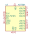
AD7304 | Description: 3V/5V, Rail-to-Rail, Quad, 8-Bit DAC, SPI Interface, SOIC-16/TSSOP-16
Keys: dac 4ch 8bit spi
Datasheet: https://www.analog.com/media/en/technical-documentation/data-sheets/AD7304_7305.pdf |
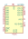
AD7305 | Description: 3V/5V, Rail-to-Rail, Quad, 8-Bit DAC, Parallel Interface, SOIC-20/TSSOP-20
Keys: dac 4ch 8bit parallel
Datasheet: https://www.analog.com/media/en/technical-documentation/data-sheets/AD7304_7305.pdf |
AD7390 | Description: Serial-Input Micropower 12-Bit DAC, DIP-8/SOIC-8/TSSOP-8
Keys: SPI 12 bit DAC
Datasheet: https://www.analog.com/media/en/technical-documentation/data-sheets/AD7390_7391.pdf |
AD7391 | Description: Serial-Input Micropower 10-Bit DAC, DIP-8/SOIC-8/TSSOP-8
Keys: SPI 10 bit DAC
Datasheet: https://www.analog.com/media/en/technical-documentation/data-sheets/AD7390_7391.pdf |
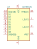
AD7533JN | Description: 10bit Multiplying DAC, 1 Channel, DIP-16
Keys: 10bit DAC 1CH
Datasheet: https://www.analog.com/static/imported-files/data_sheets/AD7533.pdf |
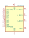
AD7533JP | Description: 10bit Multiplying DAC, 1 Channel, PLCC-20
Keys: 10bit DAC 1CH
Datasheet: https://www.analog.com/static/imported-files/data_sheets/AD7533.pdf |
AD7533KN | Description: 10bit Multiplying DAC, 1 Channel, DIP-16
Keys: 10bit DAC 1CH
Datasheet: https://www.analog.com/static/imported-files/data_sheets/AD7533.pdf |
AD7533KP | Description: 10bit Multiplying DAC, 1 Channel, PLCC-20
Keys: 10bit DAC 1CH
Datasheet: https://www.analog.com/static/imported-files/data_sheets/AD7533.pdf |
AD7533KR | Description: 10bit Multiplying DAC, 1 Channel, SOIC-16
Keys: 10bit DAC 1CH
Datasheet: https://www.analog.com/static/imported-files/data_sheets/AD7533.pdf |
AD7533LN | Description: 10bit Multiplying DAC, 1 Channel, DIP-16
Keys: 10bit DAC 1CH
Datasheet: https://www.analog.com/static/imported-files/data_sheets/AD7533.pdf |
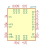
AD775 | Description: DA Converter 8 bits - 20MHz, PDIP/SOIC-24
Keys: DAC CNA
Datasheet: https://www.analog.com/media/en/technical-documentation/data-sheets/AD775.pdf |
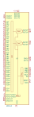
AD9142 | Description: 1.6GSPS 16bit dual-channel DAC, LFCSP-72
Keys: 16bit DAC 2CH
Datasheet: https://www.analog.com/media/en/technical-documentation/data-sheets/AD9142.pdf |
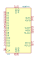
AD9744 | Description: 210MSPS 14bit DAC, TSSOP-28
Keys: 14bit DAC 1CH
Datasheet: https://www.analog.com/media/en/technical-documentation/data-sheets/AD9744.pdf |
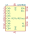
ADS7830 | Description: Single-supply, 8bit, 8 ch, SAR, 70kHz SR, 2.7 - 5 VDD, I2C, TSSOP-16
Keys: 8bit DAC 8CH
Datasheet: http://www.ti.com/lit/ds/symlink/ads7830.pdf |
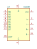
DAC08 | Description: DA Converter 8 bits
Keys: DAC CNA
Datasheet: https://www.analog.com/media/en/technical-documentation/data-sheets/DAC08.pdf |
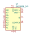
DAC0808_DIP | Description: 8-bit multiplying DAC
Keys: 8 bit multiplying DAC
Datasheet: http://www.ti.com/lit/ds/symlink/dac0808.pdf |
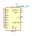
DAC0808_SOIC | Description: 8-bit multiplying DAC
Keys: 8 bit multiplying DAC
Datasheet: http://www.ti.com/lit/ds/symlink/dac0808.pdf |
DAC081C081CIMK | Description: 8-bit Micropower DAC with I2C-Compatible Interface, SOT-23-6
Keys: I2C DAC 8-bit
Datasheet: http://www.ti.com/lit/ds/symlink/dac081c081.pdf |
DAC101C081CIMK | Description: 10-bit Micropower DAC with I2C-Compatible Interface, SOT-23-6
Keys: I2C DAC 10-bit
Datasheet: http://www.ti.com/lit/ds/symlink/dac101c081.pdf |
DAC121C081CIMK | Description: 12-bit Micropower DAC with I2C-Compatible Interface, SOT-23-6
Keys: I2C DAC 12-bit
Datasheet: http://www.ti.com/lit/ds/symlink/dac121c081.pdf |
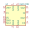
DAC1220E | Description: 20-Bit , Low-Power Digital-to-Analog Converter, SSOP-16
Keys: DAC
Datasheet: https://www.ti.com/lit/ds/symlink/dac1220.pdf |
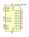
DAC5578xPW | Description: 8-Bit, Octal-Channel, Ultra-Low Glitch, Voltage Output, Two-Wire Interface Digital-to-Analog Converters, TSSOP-16
Keys: DAC I2C TWI 8-channel
Datasheet: http://www.ti.com/lit/ds/symlink/dac5578.pdf |
DAC5578xRGE | Description: 8-Bit, Octal-Channel, Ultra-Low Glitch, Voltage Output, Two-Wire Interface Digital-to-Analog Converters, QFN-24
Keys: DAC I2C TWI 8-channel
Datasheet: http://www.ti.com/lit/ds/symlink/dac5578.pdf |
DAC6578xPW | Description: 10-Bit, Octal-Channel, Ultra-Low Glitch, Voltage Output, Two-Wire Interface Digital-to-Analog Converters, TSSOP-16
Keys: DAC I2C TWI 8-channel
Datasheet: http://www.ti.com/lit/ds/symlink/dac5578.pdf |
DAC6578xRGE | Description: 10-Bit, Octal-Channel, Ultra-Low Glitch, Voltage Output, Two-Wire Interface Digital-to-Analog Converters, QFN-24
Keys: DAC I2C TWI 8-channel
Datasheet: http://www.ti.com/lit/ds/symlink/dac5578.pdf |
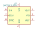
DAC7513_DCN | Description: Low-Power, Rail-to-Rail Output, 12-Bit Serial Input DAC
Keys: TI DAC 12 bit
Datasheet: http://www.ti.com.cn/cn/lit/ds/symlink/dac7513.pdf |
DAC7578xPW | Description: 12-Bit, Octal-Channel, Ultra-Low Glitch, Voltage Output, Two-Wire Interface Digital-to-Analog Converters, TSSOP-16
Keys: DAC I2C TWI 8-channel
Datasheet: http://www.ti.com/lit/ds/symlink/dac5578.pdf |
DAC7578xRGE | Description: 12-Bit, Octal-Channel, Ultra-Low Glitch, Voltage Output, Two-Wire Interface Digital-to-Analog Converters, QFN-24
Keys: DAC I2C TWI 8-channel
Datasheet: http://www.ti.com/lit/ds/symlink/dac5578.pdf |
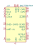
DAC7750xRHA | Description: Single-Channel, 12bit Programmable Current Output DAC for 4-mA to 20-mA Current Loop Applications, VQFN-40
Keys: DAC Current Loop 20mA
Datasheet: http://www.ti.com/lit/ds/symlink/dac7750.pdf |
DAC8750xRHA | Description: Single-Channel, 16bit Programmable Current Output DAC for 4-mA to 20-mA Current Loop Applications, VQFN-40
Keys: DAC Current Loop 20mA
Datasheet: http://www.ti.com/lit/ds/symlink/dac7750.pdf |
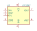
LTC1257 | Description: Single Supply 12-bit DAC with Internal Reference Voltage, SOIC-8
Keys: DAC 12-bit
Datasheet: https://www.analog.com/media/en/technical-documentation/data-sheets/1257fc.pdf |
LTC1446 | Description: 2-Channel 12-Bit Rail-To-Rail D/A Converters with SPI Interface and Internal Reference (4.096V)
Keys: 12-Bit DAC SPI Reference 2ch
Datasheet: https://www.analog.com/media/en/technical-documentation/data-sheets/1446fa.pdf |
LTC1446L | Description: 2-Channel 12-Bit Rail-To-Rail D/A Converters with SPI Interface and Internal Reference (2.500V)
Keys: 12-Bit DAC SPI 2ch
Datasheet: https://www.analog.com/media/en/technical-documentation/data-sheets/1446fa.pdf |
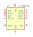
LTC1664CGN | Description: Quad Micropower 10-bit DAC, Standard, SSOP-16
Keys: Quad DAC Micropower 10bit 4ch
Datasheet: https://www.analog.com/media/en/technical-documentation/data-sheets/1664fa.pdf |
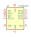
LTC1664CN | Description: Quad Micropower 10-bit DAC, Standard, DIP-16
Keys: Quad DAC Micropower 10bit 4ch
Datasheet: https://www.analog.com/media/en/technical-documentation/data-sheets/1664fa.pdf |
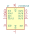
LTC1664IGN | Description: Quad Micropower 10-bit DAC, Industrial, SSOP-16
Keys: Quad DAC Micropower 10bit 4ch
Datasheet: https://www.analog.com/media/en/technical-documentation/data-sheets/1664fa.pdf |
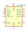
LTC1664IN | Description: Quad Micropower 10-bit DAC, Industrial, DIP-16
Keys: Quad DAC Micropower 10bit 4ch
Datasheet: https://www.analog.com/media/en/technical-documentation/data-sheets/1664fa.pdf |
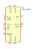
MAX5138 | Description: Low-Power, Single, 16-Bit, Buffered Voltage-Output DAC
Keys: 16-bit DAC 1CH
Datasheet: https://datasheets.maximintegrated.com/en/ds/MAX5138-MAX5139.pdf |
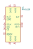
MAX5139 | Description: Low-Power, Single, 12-Bit, Buffered Voltage-Output DAC
Keys: 12-bit DAC 1CH
Datasheet: https://datasheets.maximintegrated.com/en/ds/MAX5138-MAX5139.pdf |
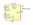
MAX5215 | Description: Digital to analog, 14 Bit, 1 ch, 2.7 - 5.5 VDD, I2C, uMAX-8
Keys: DA 14 Bit 1 ch
Datasheet: https://datasheets.maximintegrated.com/en/ds/MAX5215-MAX5217.pdf |
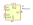
MAX5217 | Description: Digital to analog, 16 Bit, 1 ch, 2.7 - 5.5 VDD, I2C, uMAX-8
Keys: DA 16 Bit 1 ch
Datasheet: https://datasheets.maximintegrated.com/en/ds/MAX5215-MAX5217.pdf |
MAX5717xSD | Description: 16-bit Voltage Digital-to-Analog converter, SOIC-14
Keys: DAC
Datasheet: https://datasheets.maximintegrated.com/en/ds/MAX5717-MAX5719.pdf |
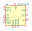
MAX5719xSD | Description: 20-bit Voltage Digital-to-Analog converter, SOIC-14
Keys: DAC
Datasheet: https://datasheets.maximintegrated.com/en/ds/MAX5717-MAX5719.pdf |
MAX5741 | Description: Digital to analog, 10 Bit, 4 ch, 2.7 - 5.5 VDD, SPI, uMAX-10
Keys: DA 8 Bit 4 ch
Datasheet: https://datasheets.maximintegrated.com/en/ds/MAX5741.pdf |
MAX5813 | Description: Digital to analog, 8 Bit, 4 ch, 2.7 - 5.5 VDD, I2C, TSSOP-14
Keys: DA 8 Bit 4 ch
Datasheet: http://datasheets.maximintegrated.com/en/ds/MAX5813-MAX5815.pdf |
MAX5813WLP | Description: Digital to analog, 8 Bit, 4 ch, 2.7 - 5.5 VDD, I2C, TSSOP-14, Maxim_WLP-12
Keys: DA 8 Bit 4 ch
Datasheet: http://datasheets.maximintegrated.com/en/ds/MAX5813-MAX5815.pdf |
MAX5814 | Description: Digital to analog, 10 Bit, 4 ch, 2.7 - 5.5 VDD, I2C, TSSOP-14
Keys: DA 10 Bit 4 ch
Datasheet: http://datasheets.maximintegrated.com/en/ds/MAX5813-MAX5815.pdf |
MAX5814WLP | Description: Digital to analog, 10 Bit, 4 ch, 2.7 - 5.5 VDD, I2C, TSSOP-14, Maxim_WLP-12
Keys: DA 10 Bit 4 ch
Datasheet: http://datasheets.maximintegrated.com/en/ds/MAX5813-MAX5815.pdf |
MAX5815 | Description: Digital to analog, 12 Bit, 4 ch, 2.7 - 5.5 VDD, I2C, TSSOP-14
Keys: DA 12 Bit 4 ch
Datasheet: http://datasheets.maximintegrated.com/en/ds/MAX5813-MAX5815.pdf |
MAX5815WLP | Description: Digital to analog, 12 Bit, 4 ch, 2.7 - 5.5 VDD, I2C, TSSOP-14, Maxim_WLP-12
Keys: DA 12 Bit 4 ch
Datasheet: http://datasheets.maximintegrated.com/en/ds/MAX5813-MAX5815.pdf |
MC1408_DIP | Description: 8-bit multiplying DAC
Keys: 8 bit multiplying DAC
Datasheet: http://www.pinballpcb.com/datasheets/OnMC1408-dac.pdf |
MC1408_SOIC | Description: 8-bit multiplying DAC
Keys: 8 bit multiplying DAC
Datasheet: http://www.pinballpcb.com/datasheets/OnMC1408-dac.pdf |
MCP4725xxx-xCH | Description: 12-bit Digital-to-Analog Converter, integrated EEPROM, I2C interface, SOT-23-6
Keys: dac twi
Datasheet: http://ww1.microchip.com/downloads/en/DeviceDoc/22039d.pdf |
MCP4728 | Description: 12-bit digital to analog converter, quad output, 2.048V internal reference, integrated EEPROM, I2C interface
Keys: dac i2c
Datasheet: http://ww1.microchip.com/downloads/en/DeviceDoc/22187E.pdf |
MCP4801 | Description: 8-Bit D/A Converters with SPI Interface, internal Reference (2.048V)
Keys: 8-Bit DAC SPI Reference 1ch
Datasheet: http://ww1.microchip.com/downloads/en/DeviceDoc/22244B.pdf |
MCP4801-EMC | Description: 8-Bit D/A Converters with SPI Interface, internal Reference (2.048V)
Keys: 8-Bit DAC SPI Reference 1ch
Datasheet: http://ww1.microchip.com/downloads/en/DeviceDoc/22244B.pdf |
MCP4802 | Description: 2-Channel 8-Bit D/A Converters with SPI Interface and Internal Reference (2.048V)
Keys: 8-Bit DAC SPI Reference 2ch
Datasheet: http://ww1.microchip.com/downloads/en/DeviceDoc/20002249B.pdf |
MCP4811 | Description: 10-Bit D/A Converters with SPI Interface, internal Reference (2.048V)
Keys: 10-Bit DAC SPI Reference 1ch
Datasheet: http://ww1.microchip.com/downloads/en/DeviceDoc/22244B.pdf |
MCP4811-EMC | Description: 10-Bit D/A Converters with SPI Interface, internal Reference (2.048V)
Keys: 10-Bit DAC SPI Reference 1ch
Datasheet: http://ww1.microchip.com/downloads/en/DeviceDoc/22244B.pdf |
MCP4812 | Description: 2-Channel 10-Bit D/A Converters with SPI Interface and Internal Reference (2.048V)
Keys: 10-Bit DAC SPI Reference 2ch
Datasheet: http://ww1.microchip.com/downloads/en/DeviceDoc/20002249B.pdf |
MCP4821 | Description: 12-Bit D/A Converters with SPI Interface, internal Reference (2.048V)
Keys: 12-Bit DAC SPI Reference 1ch
Datasheet: http://ww1.microchip.com/downloads/en/DeviceDoc/22244B.pdf |
MCP4821-EMC | Description: 12-Bit D/A Converters with SPI Interface, internal Reference (2.048V)
Keys: 12-Bit DAC SPI Reference 1ch
Datasheet: http://ww1.microchip.com/downloads/en/DeviceDoc/22244B.pdf |
MCP4822 | Description: 2-Channel 12-Bit D/A Converters with SPI Interface and Internal Reference (2.048V)
Keys: 12-Bit DAC SPI Reference 2ch
Datasheet: http://ww1.microchip.com/downloads/en/DeviceDoc/20002249B.pdf |
MCP4901 | Description: 8-Bit D/A Converters with SPI Interface
Keys: 8-Bit DAC SPI 1ch
Datasheet: http://ww1.microchip.com/downloads/en/DeviceDoc/22248a.pdf |
MCP4901-EMC | Description: 8-Bit D/A Converters with SPI Interface
Keys: 8-Bit DAC SPI 1ch
Datasheet: http://ww1.microchip.com/downloads/en/DeviceDoc/22248a.pdf |
MCP4902 | Description: 2-Channel 8-Bit D/A Converters with SPI Interface
Keys: 8-Bit DAC SPI 2ch
Datasheet: http://ww1.microchip.com/downloads/en/DeviceDoc/22250A.pdf |
MCP4911 | Description: 10-Bit D/A Converters with SPI Interface
Keys: 10-Bit DAC SPI 1ch
Datasheet: http://ww1.microchip.com/downloads/en/DeviceDoc/22248a.pdf |
MCP4911-EMC | Description: 10-Bit D/A Converters with SPI Interface
Keys: 10-Bit DAC SPI 1ch
Datasheet: http://ww1.microchip.com/downloads/en/DeviceDoc/22248a.pdf |
MCP4912 | Description: 2-Channel 10-Bit D/A Converters with SPI Interface
Keys: 10-Bit DAC SPI 2ch
Datasheet: http://ww1.microchip.com/downloads/en/DeviceDoc/22250A.pdf |
MCP4921 | Description: 12-Bit D/A Converters with SPI Interface
Keys: 12-Bit DAC SPI 1ch
Datasheet: http://ww1.microchip.com/downloads/en/DeviceDoc/22248a.pdf |
MCP4921-EMC | Description: 12-Bit D/A Converters with SPI Interface
Keys: 12-Bit DAC SPI 1ch
Datasheet: http://ww1.microchip.com/downloads/en/DeviceDoc/22248a.pdf |
MCP4921-EMS | Description: Single 12-bit Digital to Analog Converter, SPI Interface, MSOP-8
Keys: Single DAC 1ch 12bit SPI
Datasheet: http://ww1.microchip.com/downloads/en/devicedoc/21897a.pdf |
MCP4921-EP | Description: Single 12-bit Digital to Analog Converter, SPI Interface, PDIP-8
Keys: Single DAC 1ch 12bit SPI
Datasheet: http://ww1.microchip.com/downloads/en/devicedoc/21897a.pdf |
MCP4921-ESN | Description: Single 12-bit Digital to Analog Converter, SPI Interface, SOIC-8
Keys: Single DAC 1ch 12bit SPI
Datasheet: http://ww1.microchip.com/downloads/en/devicedoc/21897a.pdf |
MCP4922 | Description: 2-Channel 12-Bit D/A Converters with SPI Interface
Keys: 12-Bit DAC SPI 2CH
Datasheet: http://ww1.microchip.com/downloads/en/DeviceDoc/22250A.pdf |
MCP4922-EP | Description: Dual 12-bit Digital to Analog Converter, SPI Interface, PDIP-14
Keys: Dual DAC 1ch 12bit SPI
Datasheet: http://ww1.microchip.com/downloads/en/devicedoc/21897a.pdf |
MCP4922-ESL | Description: Dual 12-bit Digital to Analog Converter, SPI Interface, SOIC-14
Keys: Dual DAC 1ch 12bit SPI
Datasheet: http://ww1.microchip.com/downloads/en/devicedoc/21897a.pdf |
MCP4922-EST | Description: Dual 12-bit Digital to Analog Converter, SPI Interface, TSSOP-14
Keys: Dual DAC 1ch 12bit SPI
Datasheet: http://ww1.microchip.com/downloads/en/devicedoc/21897a.pdf |
THS5641AxDW | Description: 8-Bit, 100 MSPS, CommsDAC, Parallel Current DAC, SOIC-28
Keys: DAC IDAC
Datasheet: http://www.ti.com/lit/ds/symlink/ths5641a.pdf |
THS5641AxPW | Description: 8-Bit, 100 MSPS, CommsDAC, Parallel Current DAC, TSSOP-28
Keys: DAC IDAC
Datasheet: http://www.ti.com/lit/ds/symlink/ths5641a.pdf |
TLV5627CD | Description: 4-Channel DAC, 8bit, w/ Power Down, SOIC-16
Keys: DAC 4CH 8bit
Datasheet: http://www.ti.com/lit/ds/symlink/tlv5627.pdf |
TLV5627CPW | Description: 4-Channel DAC, 8bit, w/ Power Down, TSSOP-16
Keys: DAC 4CH 8bit
Datasheet: http://www.ti.com/lit/ds/symlink/tlv5627.pdf |